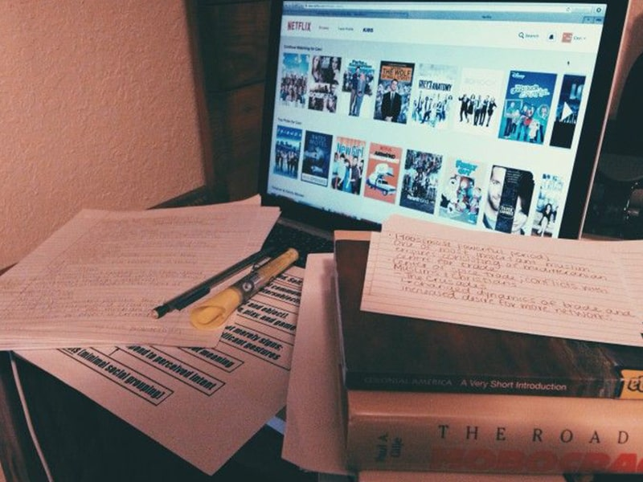
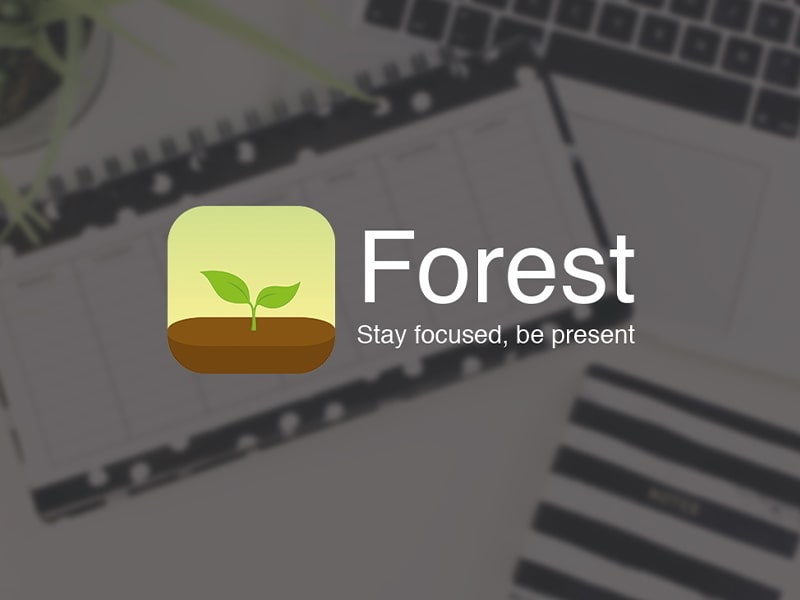

If you read one of my previous blogs about exams (Exams >>> Covid-19), you will know that many students will now be writing their previous semester exams, much like me. This blog idea hit me when I was talking to my friends and snapping all about how I completely forgot how to study and do not even remember my subject names. Okay, slight exaggeration there. I do remember their names, just cannot recall the topics in them. Not my fault, because I left them 6 months ago! And now, I have to attempt the midterms in 4 days (please pray). I wouldn’t call myself a nerd, because I am not that studious, but I am not someone who has backlogs in every subject either (touch wood).
I consider myself a mediocre performing student who sails through a semester (not very smoothly) without flunking because of the backlog terror. But this time, all I can still think about is a Netflix party or completing the remaining seasons of Grey’s Anatomy and binge-watching Haikyu! Oh and IPL is not making it any easy to pay attention to my exams. So, I took a few steps back and decided to help anyone else who is facing the same issue as me while I should actually be studying (irony, you cruel mistress). These are a few tricks I used to follow back when I knew what and how to study.
I find rewards and prizes to be the perfect encouragement in any scenario! You participate in a competition to win, anticipating the prize. You enter the lottery because you find the rewards alluring and honestly, they are just strategies. Similarly, reward yourself with something every time you hit a milestone. I usually reward myself with an episode of a show or chocolates (I assure you I am an adult) every time I complete a chapter. Sincerely, it actually helps me a lot! It is that small break where you can let loose, your heated brain can calm down, and the serotonin release spikes! Further, when you get back to studying, you are definitely in a better state of mind, so, you tend to grasp concepts better!

Not going to lie, but one of my biggest distractions is my phone, as it is for several others. Every time I need a getaway or just want to find inner peace, I put my phone on Airplane Mode. Naturally, I used to turn on the airplane mode before studying. That was until I realized there might be an emergency and things that will require my attention. That is when I started looking into various apps that lock your phone until you reach your goal. Now, there is the zen mode and all, but I still prefer this app called Forest. It is really simple to use.

You set a duration for which you will not look at other apps on your phone and in that duration, the app will grow a tree! Quite beautiful, truly. Now, if you still feel this urge to look at your notifications or scroll through memes, you will have cut down the tree that has been growing. Obviously, that is heartbreaking so, I just continue and try to push through! So, this will help you concentrate and also encourage you to reach your goal!
I know, studying with a friend might seem like you are wasting time, but it is not true when you set boundaries! Let’s be honest, it is impossible to cover all topics in a subject and some parts are a mystery until your friend explains it to you. This way you gain more knowledge than you would normally. How I approach this is, every night before the exam, I call a friend of mine, and we revise everything we have learned so far and clarify our doubts. And I go a little overboard, and have the same discussion all over again with another friend of mine, in the morning. Now, this extra step, you don’t have to follow, but trust me, having a healthy discussion always improves knowledge in both of you!
Quite frankly, it can even be a group of friends until it does not turn into chaos. Apart from this, I quiz myself a lot. I know some people do not prefer answering questions, but I feel it increases my confidence. So right before my exams, I ask a couple of friends to ask me a couple of difficult questions. If I answer them, my confidence increases, otherwise I just try to understand the concept or theory from the friend who knows. This way their confidence increases, and so does your knowledge!
These are a few tips from my side, but if you have more which helps you study better or concentrate better, please send them my way! I need all the tricks I can get at this moment because here I am writing a blog instead of focusing on the textbook that is glaring at me!
But on a more serious note, do not push yourself beyond your limits and do not compromise your health (physical and mental) over this. You matter way more than those grades. So get healthy food in your system, and proper sleep and you will be just fine!
Until next time, all the very best. Slay it!!!!!!
Love
M